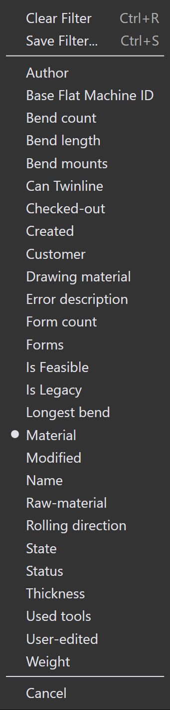

Φίλτρα part
Τα Φίλτρα Βιβλιοθήκης Part σας επιτρέπουν να αναζητήσετε γρήγορα και να εντοπίσετε parts στη βιβλιοθήκη εφαρμόζοντας συγκεκριμένες συνθήκες. Περιορίζοντας τα αποτελέσματα μόνο στα parts που πληρούν τα κριτήρια σας, αυτά τα φίλτρα διευκολύνουν τη διαχείριση και την πρόσβαση σχετικών parts αποτελεσματικά.

Κατάσταση
-
Χρησιμοποιήστε το φίλτρο Κατάσταση για να αναζητήσετε parts με βάση την κατάσταση tooling.
-
Το αναπτυσσόμενο μενού εμφανίζει καταστάσεις tooling ως έγχρωμα πλαίσια και όλες τις διαθέσιμες μηχανές και τα εφαρμοστέα σφάλματά τους.
-
Τα έγχρωμα πλαίσια αντιπροσωπεύουν τις ακόλουθες καταστάσεις:
-
Λευκό: Tooling OK
-
Πορτοκαλί: Το tooling έχει σφάλμα
-
Κίτρινο: Το tooling έχει προειδοποίηση
-
Γκρι: Το tooling κατασταλμένο
-
-
Εάν ένα part έχει narrow flange ή σφάλματα tooling not assigned, η επιλογή αυτών θα εμφανίσει τα αντίστοιχα parts.

-
Τα parts με κατασταλμένο tooling στην επιλεγμένη μηχανή θα εμφανιστούν κάνοντας κλικ στο γκρι έγχρωμο πλαίσιο.

Βάσεις κάμψης
-
Χρησιμοποιήστε το φίλτρο Βάσεις κάμψης για να αναζητήσετε parts με βάση το εργαλείο bend που χρησιμοποιείται.
-
Το αναπτυσσόμενο μενού εμφανίζει όλα τα διαθέσιμα εργαλεία bend και μπορεί να φιλτραριστεί με όνομα εργαλείου, τύπο (punch, gooseneck, radius, κ.λπ.) ή περιγραφή.
-
Επιλέξτε πολλαπλά εργαλεία και κάντε κλικ στο Συνταύτιση όλων|&** για να ταξινομήσετε τα εργαλεία που χρησιμοποιούν και τα δύο επιλεγμένα εργαλεία.

Χρησιμοποιούμενα εργαλεία
-
Το φιλτράρισμα με Χρησιμοποιούμενα εργαλεία λειτουργεί παρόμοια με το φιλτράρισμα με Βάσεις κάμψης.
-
Τα εικονίδια εργαλείων εμφανίζονται σε αναλογικά μεγέθη (όχι ακριβή, αλλά σχετικά).
-
Όταν η προεπισκόπηση tooling είναι ανοιχτή, το πέρασμα του ποντικιού πάνω από ένα εργαλείο στη λίστα φίλτρων επισημαίνει αυτό το εργαλείο στο παράθυρο προεπισκόπησης.
-
Μπορούν να επιλεγούν πολλαπλά εργαλεία και να εφαρμοστούν χρησιμοποιώντας Συνταύτιση όλων|&**.

Κατάσταση
-
Χρησιμοποιήστε το φίλτρο Κατάσταση για να αναζητήσετε parts με βάση την τρέχουσα κατάστασή τους.
-
Το αναπτυσσόμενο μενού εμφανίζει όλες τις εφαρμοστέες καταστάσεις ανάλογα με τα διαθέσιμα parts βιβλιοθήκης .
-
Η λίστα καταστάσεων αλλάζει δυναμικά σύμφωνα με τα επιλεγμένα parts και την κατάστασή τους.
-
Για παράδειγμα, επιλέξτε Material Missing για να δείτε parts σε μη επιλυμένη κατάσταση υλικού.